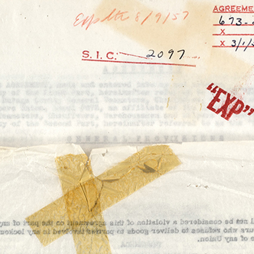
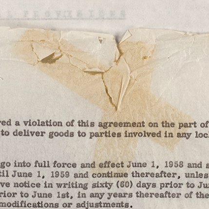

An adhesive is a substance used to bond materials together superficially through chemical and/or mechanical means. The term "adhesive" is often used interchangeably with glue or paste, but it also may refer to tapes, especially with regard to paper-based formats. Adhesives are of natural or synthetic composition, and they vary in bond strength, flexibility, deterioration rate, and degree of reversibility. Adhesives can also provide a sealing function. Historically, adhesives rendered from animal products, gum, or other plant resins were employed for a wide range of purposes, including the joining and mending of documents. In the 1920s, these natural adhesives were augmented by the development of synthetic adhesives. Over time, adhesives based on plastics, synthetic rubbers, and other elastomers (elastic polymers) emerged for commercial use. Since the mid-20th century, advances in industrial chemicals and plastics have created an array of synthetic polymer adhesives with specialized properties and purposes.
The information about adhesives presented here is intended to assist collection managers in identifying adhesive types as well as in understanding and evaluating the preservation risks associated with them. Adhesives should not be removed from nor applied directly to collection materials unless under the direction of a trained conservator.
Deterioration
Most adhesives will deteriorate over time. Their composition as well as biological and environmental conditions all factor into the stability of adhesives and their retention of original characteristics. Natural adhesives are generally weaker, more susceptible to mold and pest damage, and are often water-sensitive (unless rubber). They are therefore at risk in high humidity and water disasters. Rubber-based adhesives oxidize when they deteriorate, which causes the adhesive to yellow and become oily and sticky. In this condition, the adhesive can penetrate the paper entirely and cause staining by seeping onto adjacent sheets. After permeating paper, rubber-based adhesives lose their inherent adhesive properties and may turn from tacky to weak-and-oily to hard-and-brittle (and highly discolored). Though synthetics do not seep into paper fibers quite like natural adhesives, they can cause physical damage to documents through "cold flow," which causes the adhesive to seep even if under little to no pressure. Synthetic adhesives may contain unpredictable additives and therefore should never be assumed inert.
Natural and synthetic adhesive deterioration manifests itself with a variety of symptoms, including adhesive movement, discoloration, embrittlement, staining, and failure. Adhesives that have been exposed to water or high humidity may swell, structurally weakening the adhesive and producing acidic byproducts. Exposure to light and heat will also accelerate deterioration.
Post-It® note adhesives leave behind residues that attract dirt and other airborne particulates. After a prolonged period, the adhesives will also lift some typewriter and electrostatic printing inks when placed over a printed area.

Pressure-sensitive tape adhesive damage to onionskin paper: front side. The dark yellow staining from the deteriorated adhesive has migrated to the paper.

Pressure-sensitive tape adhesive damage to onionskin paper: back side. The staining from the deteriorated adhesive has migrated to the paper.
Preservation
In addition to chemical stability, reversibility is a desirable trait for adhesives used with collection materials. A reversible alteration must not harm valued objects, and it should allow the object to be returned to its original state. In this sense, adhesives that are water- and solvent-sensitive can at times be viewed in a positive light.
Identification Characteristics
Adhesive Types
Types listed below are not mutually exclusive. For instance, many tapes can be both pressure-sensitive and contain a synthetic polymer.
Acrylic adhesives (c. 1920–present)
Acrylic adhesives are synthetic resins. They may be found in pressure-sensitive tape and label applications as well as heat-set mending tissues, tapes, and other modern adhesives. Acrylic adhesives have long term stability in comparison to rubber-based adhesives. Determining their age is not easy: they are typically quite stable in the long term, maintain their bond, and do not exhibit significant discoloration.
Animal glues (or "hide"; c. 1700–present [on paper])
These adhesives are derived from animal bone, tissue, and skin, and they are available in the form of liquids, powders, pellets, and hot melts. Animal glues are water soluble not only before and after application but also even after drying. Examples include fish glue, bone glue, hide glue, parchment glue, rabbit skin glue, and calf glue. Animal-based adhesives are often used in packing, envelope, and bookbinding applications. When first manufactured, the glue appears as a clear yellow-brown. It breaks down over time and will eventually discolor, darken, and embrittle. As a result, aged animal glues discolor their carriers and may cause staining. Animal glues are also extremely sensitive to environmental fluctuations like humidity, airborne pollutants, and UV light radiation.
Cellulose nitrate adhesives (common c. 1890–c. 1960; use persists today in areas)
Cellulose nitrate adhesives started as a mending material to repair art and archaeological objects in the late 19th century. They contain plasticizers and are considered very unstable. Cellulose nitrate appears clear when first applied, but it becomes severely discolored and brittle over time as its plasticizers fail. Cellulose nitrate also produces gaseous fumes that turn into corrosive nitric acid in the presence of moisture, making it a threat to others as much as to itself.
Heat-sensitive adhesives (or "thermoplastic"; c. 1894–present)
When activated, thermoplastic adhesives are heated above a specific temperature and thereby rendered into a pliable and sticky liquid. As it cools, the adhesive sets and generally returns to its original solid form, although at times it may remain tacky at room temperature. The category of thermoplastic adhesives is broad and includes waxes, resins (natural or synthetic), some acrylics, and proprietary heat-set mending tissue adhesives.
Methyl cellulose adhesives (c. 1912–present)
Methyl cellulose is class of cellulose ethers that can be formed into a low tack adhesive when mixed with water or various alcohols. It is used predominantly in paper mending and bookbinding. It is considered relatively stable as it is pH neutral and easily reversible (water-soluble). In addition, it does not stain or discolor over time.
Polyvinyl acetate adhesives (PVA or PVAc; c. 1920–present)
Polyvinyl acetate is a synthetic copolymer emulsion that is generally a viscous white or creamy yellow before use which dries clear. PVA is used in various craft, bookbinding, and paper conservation applications. Polyvinyl acetate can be found in acidic adhesives (e.g. woodworking glue, Elmer’s® glue, or "school glue") as well as acid-free, archival products (e.g. Jade nos. 403 and 711, Rhoplex®, and Lascaux® acrylic). This adhesive class is perhaps the most common type of glue on the market as it is flexible, easy to use, and non-toxic. Bookbinders and conservators use acid-free PVA both as a consolidant and as a glue in conservation treatments. PVAs offered by conservation suppliers are pH neutral. They do not "off-gas" once dry, are believed to not break down over time, and are relatively light stable. However, this adhesive is not easily reversible, and it is sensitive to moisture and humidity.
Pressure-sensitive adhesives (PSA, or "self-adhesive"; c. 1845–present)
An adhesive applied to a thin, flexible carrier that will bond with an object when pressure is applied using moisture, solvent, or heat. The adhesive can be of natural or synthetic (after the 1940s) polymer composition, although it is typically made from acrylic or rubber. Examples include most common tapes (e.g. Scotch®; masking, packing, electrical) as well as self-stick notes (e.g. 3M Post Its®), stickers, and labels. Pressure-sensitive adhesives are not recommended for use on valuable materials.
Rubber-based adhesives (c. 1920–present)
Rubber-based adhesives can be made with all synthetic, all natural, or an amalgam of synthetic and natural rubber materials combined with any variety of plasticizers, tackifiers, and other additives. Natural rubber-based adhesive is low strength and of high volatility. Rubber-based adhesives are stable for only a brief period, with most made for a 6 month shelf life. Natural rubber will also exhibit more severe yellowing than synthetic. Examples of rubber-based adhesives include rubber cement, some masking tapes, acetate tapes, and cellophane tapes, the last of which is often applied to carrier materials that have poor aging characteristics. Over a short period of time, rubber adhesives will turn yellow or dark amber and will start to cause paper staining and mechanical damage. Once this happens, the adhesive becomes brittle and loses its adhesive properties. Rubber adhesives may also contain sulfur, which will fade and stain the silver image of many photographic formats.
Starch adhesives (1st century A.D.–present)
Starch adhesives are activated by soaking and/or cooking powdered starch in hot water to form a paste. The most common starches used to make these adhesives are rice and wheat. Starch pastes are widely used in papermaking and paper conservation applications, as they are both water-soluble and reversible. These pastes are pH neutral and remain stable over time under appropriate conditions. This type of paste is susceptible however to biological attack.
Vegetable adhesives (or "mucilage"; 1st century A.D.–present)
Mucilage, a thick, gluey substance produced by nearly all plants, is one of the oldest types of adhesive. Mucilage is water soluble, and it is most often used as a paper adhesive as well as to adhere stamps and labels.
Water-activated adhesives (or "gummed"; c. 1840–present)
These adhesives are activated through the application of moisture, which is typically water or saliva. As a result, additional moisture can often reactivate the adhesive and allow for the removal of its carrier (e.g. cloth or paper tape). Water-based adhesives are typically starch-based or animal glue-based. They include "gummed" tape and some postage stamp adhesives.
Carriers and Backings
Many adhesives will be "carried" by some backing material (e.g. fabric, plastic film). Though tapes, carriers, and backings are not usually classified alongside adhesives, it is important to be able to identify the adhesives typically associated with each base type.
Adhesive sheets
Adhesive sheets (e.g. laminate material, contact paper) are made from a combination of a thin sheet, such as paper or plastic film, and an adhesive, which allows the sheet to be adhered to another surface. Common types of adhesive sheets include plastic lamination sheets (e.g. cellulose acetate; see below) and contact paper sheets. Generally, lamination sheets are either self-adhesive or heat-sealed. Deteriorating lamination sheets may show signs of warping, bubbling, or splitting. Additionally, plastics may "off-gas", causing a chemical reaction with the material inside the lamination sheet and the adhesives which bond the two together. Most often the adhesives used in lamination are also acidic. Laminated objects are best stored at a constant relative humidity (at a set point [ideally ±2] between 30% and 50%) and temperature (55–68°F).
Cellulose acetate laminate
From the mid-1930s through the 1970s, acetate film was commonly used both as a laminate for fragile documents and as a consolidant for flaking or friable media. Yet over time, cellulose acetate can degrade catastrophically, thereby leading to the absolute loss of the object it seals. The adhesives commonly paired with cellulose acetate may also oxidize and discolor to an orange-yellow.
Mending tissue and tape
Japanese paper made of kozo, gampi, or mulberry fibers is often used as a mending tissue. It is a long-fiber paper that is often applied with a starch paste (or occasionally a PVA) in conservation applications. Other mending tissues and tapes come prefabricated with acrylic adhesives that are pressure-sensitive (e.g. Filmoplast® P), heat-set (e.g. Crompton®, Filmoplast® R), solvent-set, or water-activated. Though many of the prefab types are called archival, this is an optimistic, non-exact term as reversibility will vary in practice. These papers are selected for preservation purposes due to their chemical stability; they do not deteriorate rapidly unless acted upon by outside factors like mold, high adjacent acidity, or physical stress. Deterioration is most commonly seen either in physical failure due to physical stress or in discoloration due to acid deterioration from adjacent materials.
Miscellaneous
"Self-sticking" articles (e.g. postage stamps, labels, and Post-It® notes) are commonly made up of a paper backing and an adhesive. The paper backing used is often low-grade and acidic; and as such, the acid from the backing may migrate from adherent to the adherend. Additional deteriorative factors include humidity, light, oxygen, and over-handling.
Tape
Though not a genuine "carrier," tape is a common format that incorporates pressure-sensitive adhesives. The adhesive, typically acrylic- or rubber-based, is mounted on a flexible carrier made of fabric, plastic film, or paper. Tapes that are frequently encountered among documents are mending tape, cellophane tape, and masking tape. Applications for these tapes include mending, hinging, and mounting.
Acrylic tape indicators include: a frosted carrier; little to no discoloration of the adhesive or carrier (although if on a cellulose diacetate carrier, it will shrink); and an oozing adhesive.
Rubber-based tape indicators include: discoloration of the adhesive and/or carrier; embrittled, yellowed carrier; adhesive failure; penetration of paper surface by adhesive.
Tape carrier deterioration is often seen in partnership with the deterioration of the adhesive (as described above). Carriers made of plastic film, in particular cellulose diacetate and vinyl, may shrink, discolor, curl, or become brittle. Paper carriers may discolor and become weaker over time.
Resources
Smith, M.A., Jones, N.M.M., Page, S.L., & Dirda, M.P. (1983). Pressure-sensitive tape and techniques for its removal from paper. The Book and Paper Group. 23 (2).